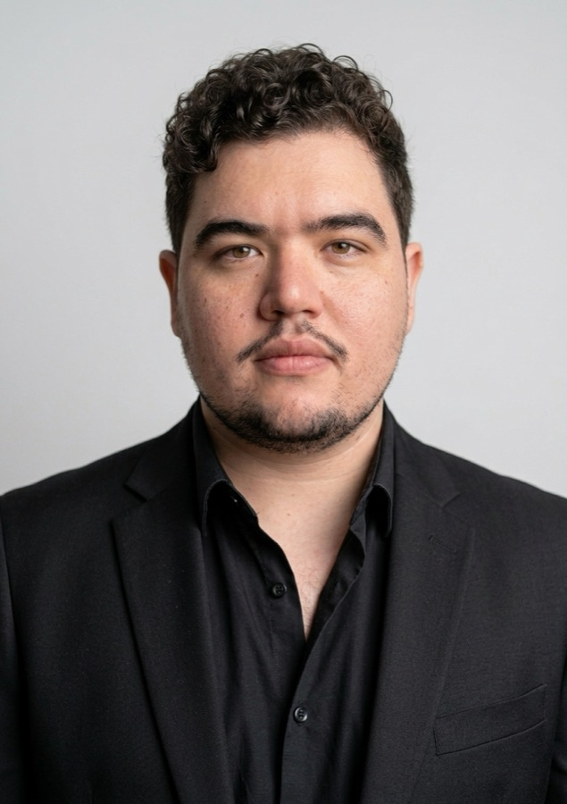

PhD in Engineering of Complex Systems
Università del Salento — Lecce, Italy
Research project: Quantum Computing and Quantum Machine Learning approaches for Climate Change applications, including quantum data assimilation.
Base
Inspired by
Developer classics
Accessibility
Working on Quantum Machine Learning
Computer Engineer exploring how quantum computing and machine learning can help us understand — and forecast — a changing climate.

Quantum ML Climate AIPublications & preprints
Months of climate-AI research at CMCC
Selected projects, from HPC to full-stack
Certifications & awards
I'm a licensed Computer Engineer and a PhD student in Engineering of Complex Systems at the University of Salento, where I research Quantum Computing and Quantum Machine Learning approaches for climate science.
Before the PhD I spent about 18 months as a Post-Degree Researcher at the Euro-Mediterranean Centre on Climate Change (CMCC), building end-to-end ML/DL pipelines on multidimensional climate datasets and contributing to ML4Fires, the wildfire-forecasting module of the EU interTwin Digital Twin project, trained at scale on HPC.
My path started in Physics, moved on to Information and Computer Engineering and, along the way, picked up a full-stack toolbox: Python, Java/Spring Boot, Angular/Ionic, Docker and MPI. Born and raised in Lecce, I love meeting new people, and away from the keyboard you'll find me playing chess or lost in a good book.
From physics lectures to supercomputers and qubits.
Research project: Quantum Computing and Quantum Machine Learning approaches for Climate Change applications, including quantum data assimilation.
Thesis: Global downscaling of remotely sensed soil-moisture retrievals using Machine Learning. Courses in High Performance Computing, Computer Vision and Parallel Algorithms sparked my passion for Machine Learning; Robotics, IoT and Network Technologies showed me how far it can reach.
Thesis: Design and development of a back-end subsystem for an event-management service (Spring Boot REST).
Where I grew some of the soft skills that define me most: teamwork and communication.
Where classical and quantum computing meet climate science.
From global-scale climate models to full-stack platforms and parallel algorithms.
Core ML/DL component of an Environmental Digital Twin for global wildfire propagation, integrated into the EU interTwin platform, with a reproducible training pipeline distributed on HPC.
ML-based downscaling of satellite-derived soil-moisture products on the EASE 2.0 grid, with pipelines for multidimensional Earth-observation datasets.
LinkedIn-style multi-user platform: Angular + Ionic frontend, Spring Boot REST backend, Firebase for push and bulk notifications. End-to-end ownership, from architecture to deployment.
Multi-user system for secure personal-data management using IOTA's Masked Authenticated Messaging (MAM) over the Tangle; Angular/Ionic frontend, Spring Boot REST backend.
Drupal content-management plugin backed by a Spring Boot service over a materialized-table relational schema, with an Angular web client and stored procedures for data exchange between backends.
Parallel design and implementation of the one-dimensional Fast Hartley Transform (FHT) using the MPICH message-passing library.
Polynomial and multivariate regression plus Kalman filtering applied to COVID-19 spread, modeled with the SIR compartmental model.
The languages, frameworks and tools I reach for.
DataCamp
DataCamp
DataCamp
IBM SkillsBuild
Forschungszentrum Jülich — gate-based algorithms and quantum annealing
Order of Engineers of Lecce — Sec. A, Sector C
21st International Conference on Image Analysis and Processing
Overall 6.0/9.0 — CEFR B2
Innovation & Technology, Business Strategy, Digital Marketing
Open to research collaborations, talks and interesting problems in ML, HPC and quantum computing.